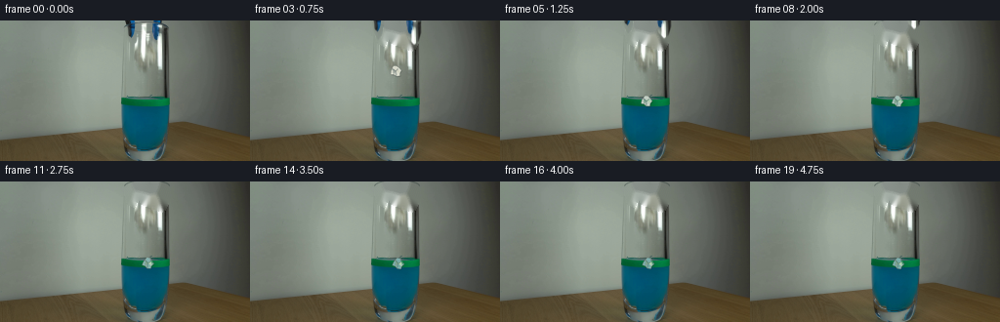
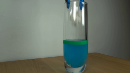
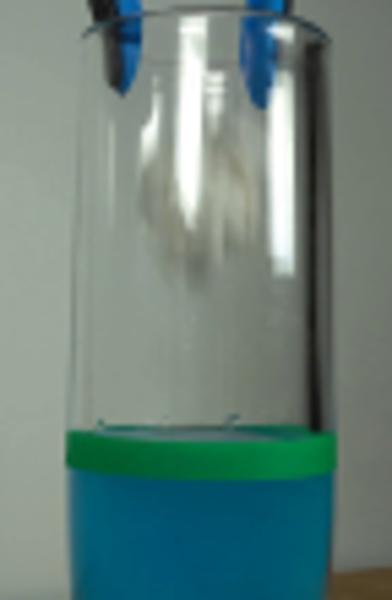
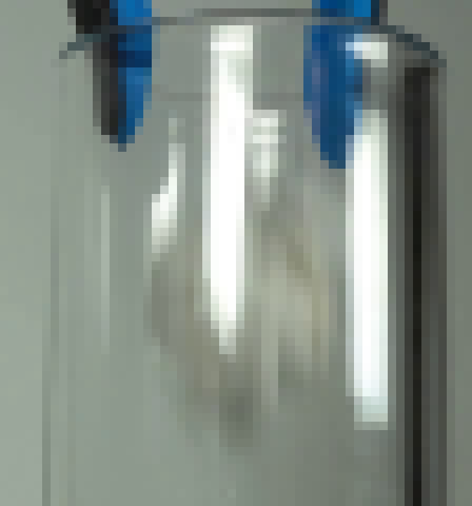
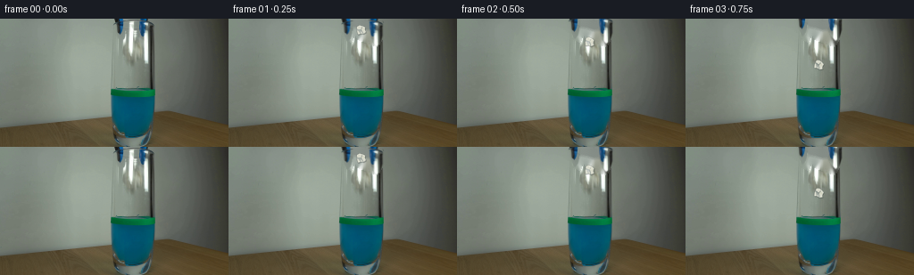
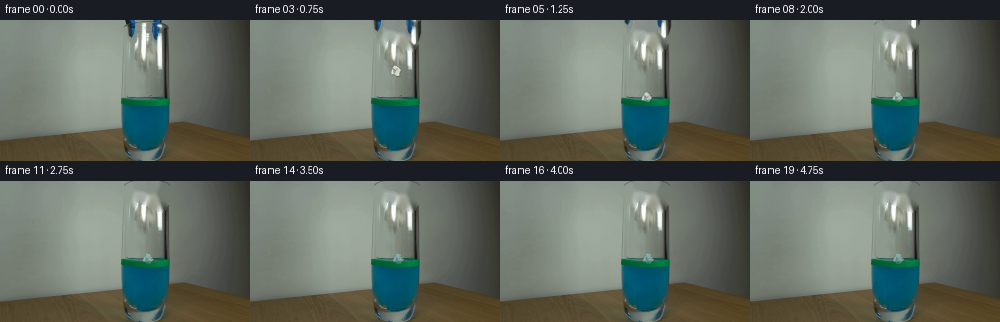
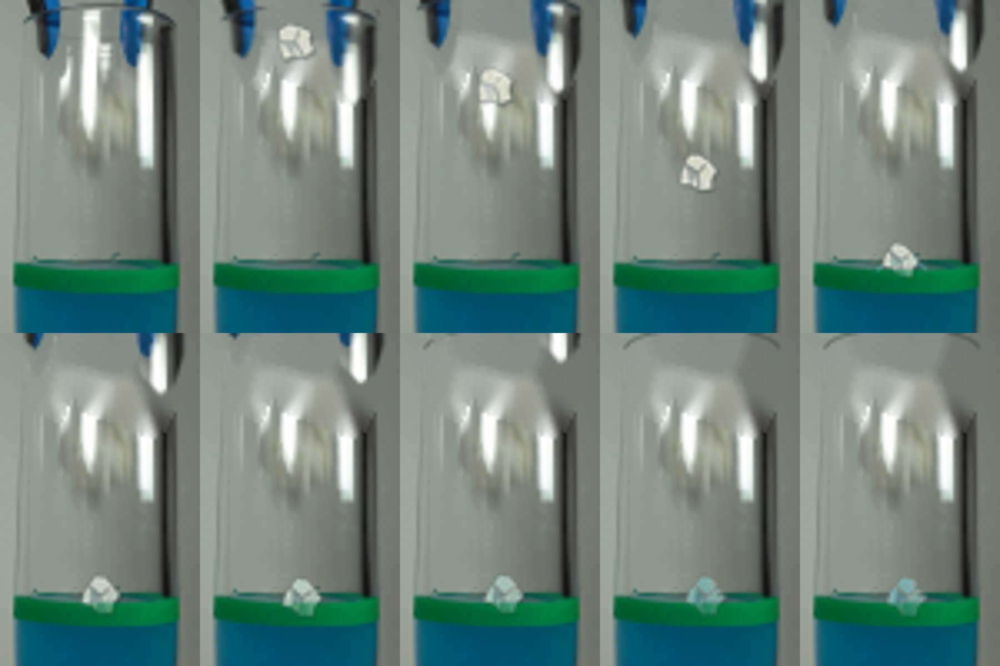

CODING AGENTS AS PIXEL WORLD MODELS
traex/GPT-5.6-Sol · 0136
点击播放 · 原生 RGB 像素
逐轮保存的候选
回放视频、检查图与代码变化。
每份候选均可单独播放。实际图片检查记录在下方工具轨迹中。
候选 01播放与检查图
点击播放 · 原生 RGB 像素

展开代码变化
--- 上一保存版本
+++ 本次保存版本
@@ -0,0 +1,161 @@
+from pathlib import Path
+
+import cv2
+import numpy as np
+from PIL import Image, ImageDraw, ImageFilter
+
+import artifact_io
+
+
+ROOT = Path(__file__).resolve().parent
+S = 4 # antialiasing scale used for drawn details
+W, H = 256, 144
+
+
+def polygon_mask(points, blur=0.65):
+ """A soft, high quality mask at the native image size."""
+ m = Image.new("L", (W * S, H * S), 0)
+ d = ImageDraw.Draw(m)
+ d.polygon([(round(x * S), round(y * S)) for x, y in points], fill=255)
+ if blur:
+ m = m.filter(ImageFilter.GaussianBlur(blur * S))
+ return np.asarray(m.resize((W, H), Image.Resampling.LANCZOS), np.uint8)
+
+
+def make_clean_plate(src):
+ # Remove only the grabber fingers and the little paper. Telea inpainting
+ # works especially well here because the wall/glass interiors are smooth.
+ mask = np.zeros((H, W), np.uint8)
+ cv2.fillPoly(mask, [np.int32([(127, 0), (141, 0), (141, 14), (137, 25),
+ (131, 22), (128, 12)])], 255)
+ cv2.fillPoly(mask, [np.int32([(155, 0), (172, 0), (172, 20), (167, 30),
+ (158, 27), (156, 14)])], 255)
+ # The crumpled paper held between the tips is mostly hidden in a highlight.
+ cv2.fillPoly(mask, [np.int32([(143, 2), (158, 2), (159, 18), (154, 25),
+ (145, 22), (141, 12)])], 255)
+ mask = cv2.dilate(mask, np.ones((3, 3), np.uint8), iterations=1)
+ clean = cv2.inpaint(src[:, :, ::-1], mask, 4, cv2.INPAINT_TELEA)[:, :, ::-1]
+
+ # Restore the narrow dark glass rim crossing behind the tool. Its modest
+ # contrast and slight blur match the photographed optics.
+ layer = Image.new("RGBA", (W * S, H * S), (0, 0, 0, 0))
+ d = ImageDraw.Draw(layer)
+ d.arc((127*S, -2*S, 174*S, 12*S), 184, 354, fill=(40, 53, 51, 110), width=1*S)
+ layer = layer.resize((W, H), Image.Resampling.LANCZOS)
+ return np.asarray(Image.alpha_composite(Image.fromarray(clean).convert("RGBA"), layer).convert("RGB"))
+
+
+def grabber_cutouts(src):
+ # Masks follow the two blue-black rubber fingers in the photograph. Keeping
+ # their actual pixels preserves the scene's lighting and material realism.
+ left = polygon_mask([(127, 0), (141, 0), (141, 13), (138, 23),
+ (135, 26), (131, 21), (129, 10)], .45)
+ right = polygon_mask([(155, 0), (171, 0), (171, 19), (168, 28),
+ (164, 31), (158, 25), (157, 13)], .45)
+ return [(src.copy(), left), (src.copy(), right)]
+
+
+def composite_shift(dst, rgb, alpha, dx, dy):
+ mat = np.float32([[1, 0, dx], [0, 1, dy]])
+ moved = cv2.warpAffine(rgb, mat, (W, H), flags=cv2.INTER_LINEAR,
+ borderMode=cv2.BORDER_REPLICATE)
+ a = cv2.warpAffine(alpha, mat, (W, H), flags=cv2.INTER_LINEAR,
+ borderMode=cv2.BORDER_CONSTANT).astype(np.float32) / 255.0
+ return np.clip(dst * (1-a[..., None]) + moved * a[..., None], 0, 255).astype(np.uint8)
+
+
+def draw_paper(frame, cx, cy, angle, wet=0.0, squash=0.0):
+ """Draw an irregular, shaded crumpled paper scrap."""
+ canvas = Image.new("RGBA", (W*S, H*S), (0, 0, 0, 0))
+ d = ImageDraw.Draw(canvas)
+ # Vertices are intentionally asymmetric and are rotated as one rigid scrap.
+ pts = [(-5.0, -4.7), (-1.7, -6.0), (1.3, -4.8), (4.7, -3.2),
+ (4.0, .1), (5.0, 2.8), (1.4, 4.8), (-1.2, 3.8),
+ (-4.6, 4.7), (-5.5, 1.0)]
+ ca, sa = np.cos(angle), np.sin(angle)
+ sy = 1.0 - .32*squash
+ def tr(p):
+ x, y = p[0], p[1]*sy
+ return ((cx + x*ca-y*sa)*S, (cy + x*sa+y*ca)*S)
+ p = [tr(q) for q in pts]
+ # Subtle contact shadow makes the dry paper read as inside, not pasted on.
+ shadow = [(x+0.7*S, y+0.9*S) for x, y in p]
+ d.polygon(shadow, fill=(20, 32, 30, int(58*(1-.5*wet))))
+ base = tuple(int((1-wet)*a + wet*b) for a, b in zip((218, 219, 204), (104, 164, 166)))
+ d.polygon(p, fill=base+(246,), outline=(146, 153, 145, 235), width=max(1, S//2))
+ # Three folded facets and crease lines.
+ a = tr((-4.6, -1.2)); b = tr((-.5, -.4)); c = tr((-1.5, 3.7))
+ d.polygon([a,b,c], fill=(174, 181, 174, 185))
+ a2=tr((-.5,-.4)); b2=tr((1.2,-4.6)); c2=tr((4.0,.1))
+ d.polygon([a2,b2,c2], fill=(239, 238, 218, 190))
+ d.line([tr((-4.7,-1.3)),tr((-.5,-.4)),tr((1.4,4.4))], fill=(126,139,137,190), width=S//2+1)
+ d.line([tr((-.5,-.4)),tr((1.2,-4.5))], fill=(157,164,157,170), width=S//2+1)
+ # Tiny specular edge, dimmed as the paper gets soaked.
+ d.line([tr((-1.4,-4.8)),tr((1.1,-4.2)),tr((3.2,-2.7))],
+ fill=(255,255,239,int(180*(1-wet))), width=S)
+ canvas = canvas.filter(ImageFilter.GaussianBlur(.13*S)).resize((W,H), Image.Resampling.LANCZOS)
+ return np.asarray(Image.alpha_composite(Image.fromarray(frame).convert("RGBA"), canvas).convert("RGB"))
+
+
+def water_effects(frame, i, cx):
+ """Small splash followed by damped surface ripples inside the glass."""
+ lay = Image.new("RGBA", (W*S,H*S), (0,0,0,0)); d=ImageDraw.Draw(lay)
+ if i == 4: # impact: two short, physically modest upward droplets
+ d.ellipse(((cx-3.4)*S, 77.0*S, (cx-1.8)*S, 79.6*S), fill=(126,205,205,175))
+ d.ellipse(((cx+3.0)*S, 76.2*S, (cx+4.2)*S, 78.3*S), fill=(108,193,193,150))
+ d.arc(((cx-8)*S, 78*S, (cx+8)*S, 86*S), 190, 350,
+ fill=(103,210,195,180), width=S)
+ if i >= 5:
+ age=i-5
+ r=min(16,5+age*2.1)
+ alpha=max(18,120-age*11)
+ # Elliptical horizontal arcs are clipped naturally by staying in glass.
+ d.arc(((cx-r)*S,(81.0-r*.18)*S,(cx+r)*S,(84.0+r*.18)*S),185,355,
+ fill=(83,188,185,alpha),width=max(2,S//2))
+ if age < 6:
+ r2=max(3,r-5)
+ d.arc(((cx-r2)*S,82*S,(cx+r2)*S,85*S),5,175,
+ fill=(18,105,125,alpha//2),width=max(2,S//2))
+ lay=lay.filter(ImageFilter.GaussianBlur(.20*S)).resize((W,H),Image.Resampling.LANCZOS)
+ return np.asarray(Image.alpha_composite(Image.fromarray(frame).convert('RGBA'),lay).convert('RGB'))
+
+
+def generate():
+ src=np.asarray(Image.open(ROOT/'first_frame.png').convert('RGB'),np.uint8)
+ clean=make_clean_plate(src)
+ cuts=grabber_cutouts(src)
+ frames=[]
+ for i in range(20):
+ if i==0:
+ frames.append(src.copy()); continue
+ f=clean.copy()
+
+ # The jaws open, release, and are lifted straight up out of the locked
+ # shot. Small opposing x motion makes the release unambiguous.
+ open_amt=min(4.0, i*1.55)
+ rise=max(0, i-1)*3.2
+ f=composite_shift(f,*cuts[0],-open_amt,-rise)
+ f=composite_shift(f,*cuts[1], open_amt,-rise)
+
+ # Real-time fall: release at 0.25 s and surface contact near 1.0 s.
+ if i==1: x,y,ang=149.2,13.0,-.12
+ elif i==2: x,y,ang=149.0,26.5,.10
+ elif i==3: x,y,ang=149.8,52.5,.34
+ elif i==4: x,y,ang=150.5,78.8,.53
+ else:
+ # The scrap floats and slowly wets, with decreasing vertical bob.
+ age=i-5
+ x=150.5 + 1.8*(1-np.exp(-age/4.0))
+ y=83.2 + 1.6*(1-np.exp(-age/5.0)) + np.sin(age*1.55)*1.1*np.exp(-age/5.0)
+ ang=.50 + .12*(1-np.exp(-age/3.5))
+ wet=0 if i<4 else min(.82,(i-3)/11)
+ f=water_effects(f,i,x)
+ f=draw_paper(f,x,y,ang,wet=wet,squash=.55 if i==4 else .08*np.exp(-(i-5)/3) if i>4 else 0)
+ frames.append(f)
+ arr=np.stack(frames).astype(np.uint8)
+ assert np.array_equal(arr[0],src)
+ artifact_io.save(arr,ROOT)
+
+
+if __name__=='__main__':
+ generate()
候选 02播放与检查图
点击播放 · 原生 RGB 像素

展开代码变化
--- 上一保存版本
+++ 本次保存版本
@@ -85,9 +85,11 @@
d.polygon(p, fill=base+(246,), outline=(146, 153, 145, 235), width=max(1, S//2))
# Three folded facets and crease lines.
a = tr((-4.6, -1.2)); b = tr((-.5, -.4)); c = tr((-1.5, 3.7))
- d.polygon([a,b,c], fill=(174, 181, 174, 185))
+ facet1=tuple(int((1-wet)*a+wet*b) for a,b in zip((174,181,174),(80,139,145)))
+ d.polygon([a,b,c], fill=facet1+(185,))
a2=tr((-.5,-.4)); b2=tr((1.2,-4.6)); c2=tr((4.0,.1))
- d.polygon([a2,b2,c2], fill=(239, 238, 218, 190))
+ facet2=tuple(int((1-wet)*a+wet*b) for a,b in zip((239,238,218),(131,183,178)))
+ d.polygon([a2,b2,c2], fill=facet2+(190,))
d.line([tr((-4.7,-1.3)),tr((-.5,-.4)),tr((1.4,4.4))], fill=(126,139,137,190), width=S//2+1)
d.line([tr((-.5,-.4)),tr((1.2,-4.5))], fill=(157,164,157,170), width=S//2+1)
# Tiny specular edge, dimmed as the paper gets soaked.
@@ -120,6 +122,15 @@
return np.asarray(Image.alpha_composite(Image.fromarray(frame).convert('RGBA'),lay).convert('RGB'))
+def put_behind_level_band(frame, plate, cx):
+ """The green level marker is on the outside of the glass, in front of paper."""
+ yy, xx=np.mgrid[0:H,0:W]
+ horizontal=np.clip(1-np.abs(xx-cx)/8.0,0,1)
+ vertical=np.clip((yy-79.2)/2.0,0,1)*np.clip((88.0-yy)/2.0,0,1)
+ a=(horizontal*vertical*.72)[...,None]
+ return np.clip(frame*(1-a)+plate*a,0,255).astype(np.uint8)
+
+
def generate():
src=np.asarray(Image.open(ROOT/'first_frame.png').convert('RGB'),np.uint8)
clean=make_clean_plate(src)
@@ -146,11 +157,13 @@
# The scrap floats and slowly wets, with decreasing vertical bob.
age=i-5
x=150.5 + 1.8*(1-np.exp(-age/4.0))
- y=83.2 + 1.6*(1-np.exp(-age/5.0)) + np.sin(age*1.55)*1.1*np.exp(-age/5.0)
+ y=79.4 + .45*(1-np.exp(-age/5.0)) + np.sin(age*1.55)*.8*np.exp(-age/5.0)
ang=.50 + .12*(1-np.exp(-age/3.5))
wet=0 if i<4 else min(.82,(i-3)/11)
f=water_effects(f,i,x)
f=draw_paper(f,x,y,ang,wet=wet,squash=.55 if i==4 else .08*np.exp(-(i-5)/3) if i>4 else 0)
+ if i>=4:
+ f=put_behind_level_band(f,clean,x)
frames.append(f)
arr=np.stack(frames).astype(np.uint8)
assert np.array_equal(arr[0],src)
可观测工具轨迹
实际执行的命令与返回图片。
命令 1exit 0
/bin/bash -lc "cat prompt.txt && printf '\\n---RULES---\\n' && cat GENERATION_RULES.md"
命令 2exit 0
/bin/bash -lc "find . -maxdepth 2 -type f -printf '%p %s bytes\\n' | sort"
命令 3exit 127
/bin/bash -lc "file first_frame.png && python3 - <<'PY'
from PIL import Image
im=Image.open('first_frame.png');print(im.size,im.mode)
PY"命令 4exit 0
/bin/bash -lc "sed -n '1,240p' artifact_io.py; python3 - <<'PY'
from PIL import Image
im=Image.open('first_frame.png'); print(im.size, im.mode)
PY"命令 5exit 0
/bin/bash -lc "python3 - <<'PY'
from PIL import Image
im=Image.open('first_frame.png')
im.crop((112,0,184,110)).resize((720,1100)).save('.tmp/crop.png')
PY"命令 6exit 0
/bin/bash -lc "python3 - <<'PY' mods=['cv2','scipy','numpy','PIL','imageio'] for m in mods: try: q=__import__(m); print(m,'ok',getattr(q,'__version__','')) except Exception as e: print(m,e) PY"
命令 7exit 0
/bin/bash -lc "python3 - <<'PY'
from PIL import Image
im=Image.open('first_frame.png')
for box,name in [((120,0,176,60),'top'),((120,0,176,100),'glass')]:
im.crop(box).resize(((box[2]-box[0])*12,(box[3]-box[1])*12),Image.Resampling.NEAREST).save(f'.tmp/{name}.png')
PY"命令 8exit 0
/bin/bash -lc "python3 - <<'PY'
from PIL import Image
import numpy as np
im=np.array(Image.open('first_frame.png')).astype(float)
g=im.mean(2)
chars=' .:-=+*#%@'
for y in range(0,81,2):
print(f'{y:02}', ''.join(chars[min(9,int(g[y,x]/256*10))] for x in range(124,178)))
PY"命令 9exit 0
/bin/bash -lc 'python3 generate.py'
命令 10exit 0
/bin/bash -lc "python3 - <<'PY'
import numpy as np
from PIL import Image
p=np.load('pixels.npz')['pixels']; print(p.shape,p.dtype)
a=np.array(Image.open('first_frame.png')); b=np.array(Image.open('frames/00.png')); print('frame0 exact',np.array_equal(a,b), 'range',a.min(),a.max())
for i in range(20):
x=np.array(Image.open(f'frames/{i:02}.png'))
print(i, np.mean(np.abs(x.astype(float)-a)), np.count_nonzero(np.any(x"'!=a,2)))
PY'命令 11exit 0
/bin/bash -lc 'python3 generate.py'
命令 12exit 0
/bin/bash -lc "python3 - <<'PY'
from PIL import Image
ims=[]
for i in [0,1,2,3,4,5,6,8,12,19]:
im=Image.open(f'frames/{i:02}.png').crop((120,0,180,100)).resize((360,600))
ims.append(im)
out=Image.new('RGB',(360*5,600*2))
for j,im in enumerate(ims):out.paste(im,((j%5)*360,(j//5)*600))
out.save('.tmp/detail_sheet.png')
PY"命令 13exit 0
/bin/bash -lc "python3 - <<'PY'
from pathlib import Path
from PIL import Image
import numpy as np
assert Path('pixels.npz').is_file() and Path('index.html').is_file()
a=np.array(Image.open('first_frame.png').convert('RGB'))
fs=[np.array(Image.open(f'frames/{i:02d}.png').convert('RGB')) for i in range(20)]
assert all(x.shape==(144,256,3) and x.dtype==np.uint8 for x in fs)
assert np.array_equal(fs[0],a)
p=np.load('pixels.npz')['pixels']
assert p.shape==(144,256,20)
print('validated: 20 RGB frames, 256x144; exact frame 00; pixels.npz and player generated')
PY"视觉工具实际返回图片 1

视觉工具实际返回图片 2

视觉工具实际返回图片 3

视觉工具实际返回图片 4

视觉工具实际返回图片 5

视觉工具实际返回图片 6

视觉工具实际返回图片 7

保存候选 2 份；完成命令 13 次；可验证图片返回 7 张。原始 API 响应与完整日志保留在本地。